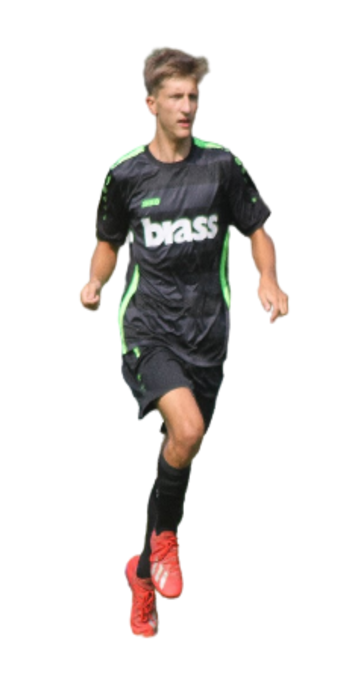

Daniel Diezel
Fußball ist wie Muskelaufbau –
wer hart trainiert, viel lernt und alles gibt,
kann einer der besten auf dem Platz werden.
Fußball ist wie Muskelaufbau –
wer hart trainiert, viel lernt und alles gibt,
kann einer der besten auf dem Platz werden.

Diezel wechselte 2013 zum Aschaffenburger Kraftpaket TuS Leider. Er war sofort eine Sensation und galt schnell als einer der besten Stürmer der Liga. Nach dem Stadtmeistertitel im Mai 2019 kämpfte er sich immer wieder von Verletzungen zurück – Ausdauer, die seinen Charakter zeigt.


Diezel begann 2005 bei SV Stockstadt. Er gewann mehrere Jugendturniere und führte sein Team 2008 zur Meisterschaft – mit einem Torverhältnis von 48:0. Mit weiteren Titeln in den Folgejahren wurde er in höhere Jugendteams berufen. Als Stürmer wusste er immer, wo das Tor war. 2013, als sein Team sich auflöste, suchte er neue Herausforderungen.

 SV Stockstadt
SV Stockstadt
 TuS A'burg Leider
TuS A'burg Leider
Diezel ist ein Stürmer mit einem breiten Abschlussrepertoire und erzielt deshalb Tore der unterschiedlichsten Art. Seine Technik beim Schuss ermöglicht ihm erhebliche Kraft ohne Abstriche bei der Genauigkeit – bei gleichzeitig hervorragendem Gleichgewicht. Er bevorzugt Schüsse mit dem Innenrist in die Ecken, kann aber auch mit Vollspann abschließen, sodass Torhüter kaum reagieren können. Minimal benötigtes Ausholmoment bedeutet: auch unter Druck voller Druck. Seine Positionierung ist eine weitere große Stärke – er lässt sich nie eng decken, ist ständig in Bewegung und richtet seinen Körper immer zum Tor aus, um früh im Angriff abschließen zu können.